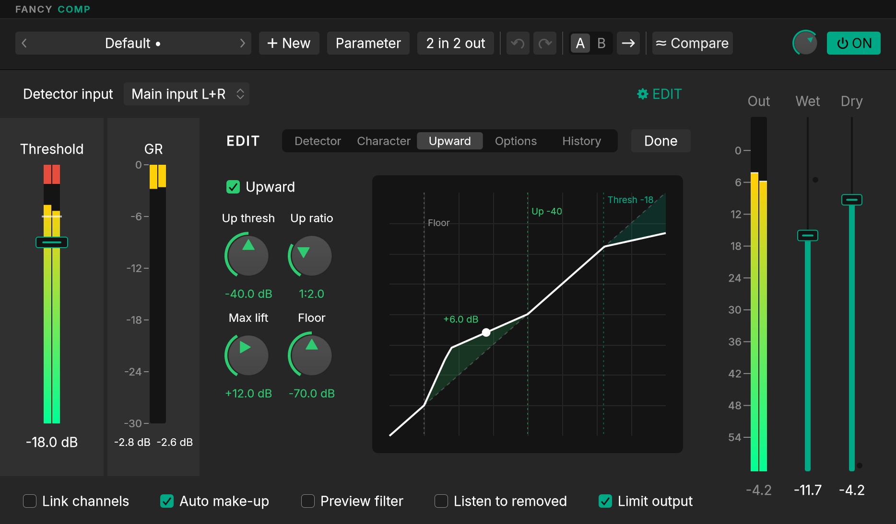
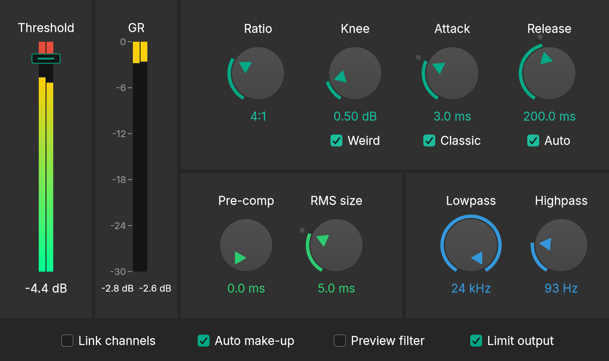

Fancy Comp
Compressor
A compressor with its threshold on the input meter, a sidechain, a filtered detector and an output limiter.

- 1Threshold faderSet the level where compression starts, on top of the input meter, so you see what crosses it.
- 2GR meterSee how much is being turned down, for each channel.
- 3Detector inputCompress from the track itself or from a sidechain, such as a kick ducking a bass.
- 4Ratio and KneeChoose how firmly it compresses, and how gradually it starts.
- 5Attack and ReleaseLet the punch through or catch it, and let Auto set the release for you.
- 6Lowpass and HighpassFilter what the detector hears, so a bass drum doesn’t pump the whole mix.
- 7Wet and DryBlend compressed and uncompressed sound for parallel compression.
- 8Checkbox rowLink the channels, make up the lost level automatically, and limit the output.

- 1EDIT pagesOpen four pages of deeper settings without leaving the window: Detector, Character, Upward and Options.
- 2Up threshold and ratioLift the quiet parts of a performance towards the loud ones.
- 3Max lift and FloorLimit how far it lifts, and keep it from raising the noise between phrases.
- 4Transfer curveSee both directions of compression on one curve, with the lift being applied right now.
- 5Threshold meterThe meter keeps showing the threshold in use while you work in the drawer.
What you can do with it
Set the threshold where you can see the signal.
The Threshold fader sits on top of the input meter. Pull it down until the peaks cross it, and the GR meter beside it shows what that costs.

- Compress from somewhere elseKey it from a sidechain input, or from a filtered copy of the track.
- Lift what’s too quietUpward compression raises soft passages, with a limit on the lift and a floor under it.
- Keep it steady from verse to chorusAuto threshold follows the input’s long-term level, so the amount of compression stays the same.
- Add colour on the wayA Warm or Bright stage, before or after the compressor, with the curves from Fancy Sature.
- Shape what the detector hearsA low shelf, a bell and a high shelf on a curve you can drag.
- Catch the last peaksLimit output puts a limiter after the compressor.
- Compress in parallelSeparate Wet and Dry faders, kept in time with each other.
- Avoid aliasingOversampling up to 8x.
Hear it
Mockup only: this section appears on a plugin’s page once its before and after clips are recorded. Until then the page has no player.
0:06 / 0:16
Clip name and the settings used go here.
Details
| Formats | VST3 on Windows 10 and 11 (x64). VST3 and Audio Unit on macOS 11 or later (beta). |
|---|---|
| Inputs | Mono or stereo, plus a stereo sidechain. |
| Latency | None at the default settings. Pre-comp, oversampling and Limit output add some, and the host compensates for it. |
| Oversampling | Up to 8x. |
| Window | 934 × 547 at 100 %, resizable to 200 %. |
Works well with
Download Fancy Plugs 1.6.0
All fourteen plugins in one zip, free to download and use. VST3 for Windows 10 and 11 (x64). On a Mac: VST3 and Audio Unit for macOS 11 or later, Intel and Apple silicon, as a beta. The installer copies them to your own folders and needs no administrator password.